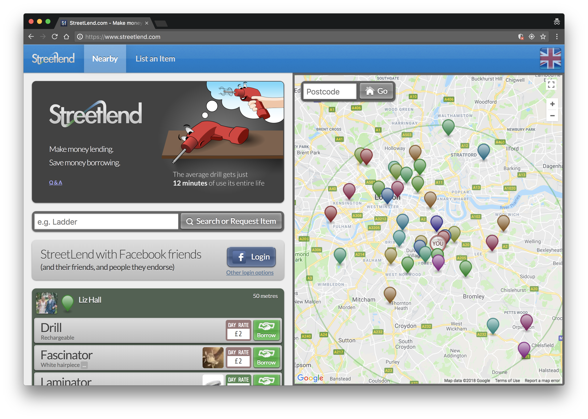
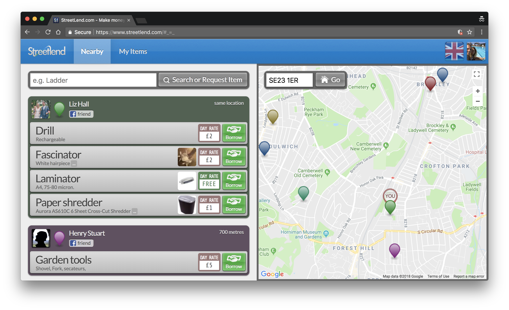
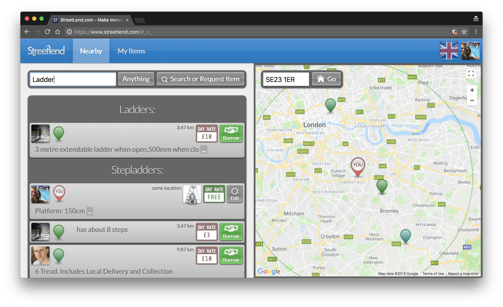
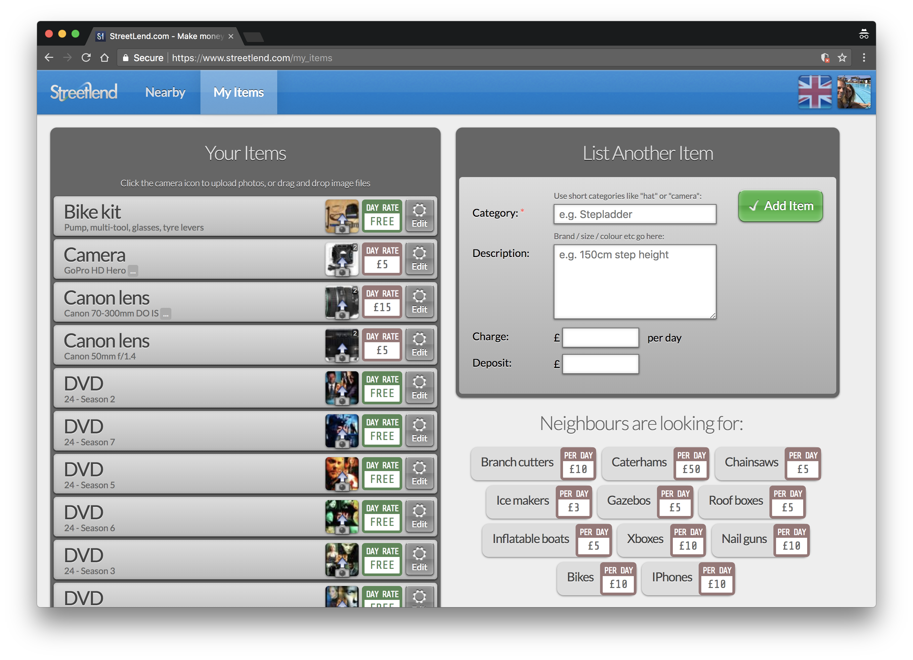
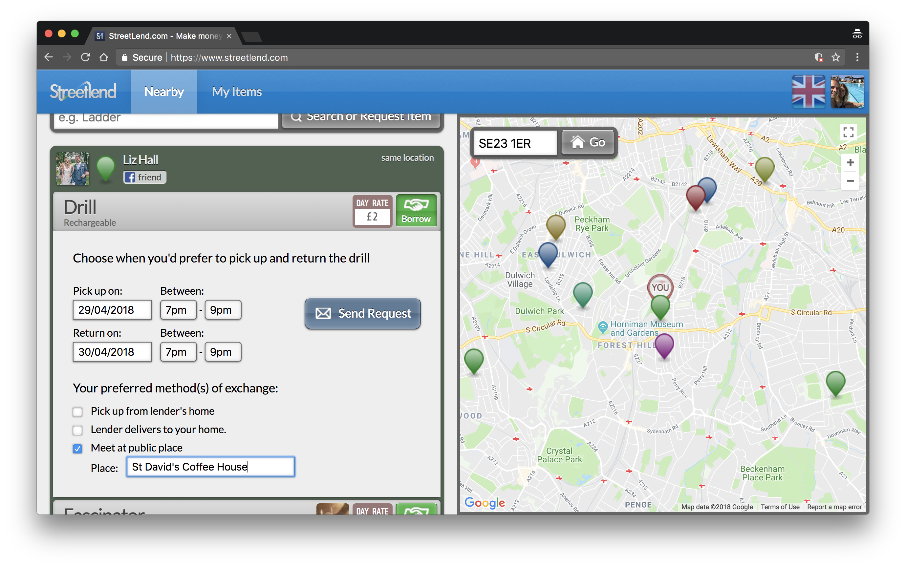

Streetlend.com was a website that helped neighbours and friends lend items to each other. Ladders, drills etc.
The site was modern, mobile-friendly and easy to use. Scroll down to see how Streetlend worked, and why it was reluctantly shut down.
Lenders listed hundreds of items, mainly in London. Many friction-free transactions were made, at no charge to lender or borrower.
Streetlend's business model involved affiliation with Amazon. When members searched for an item to borrow, they were also shown items to buy, and Streetlend earnt a cut of the sales revenue. Did it turn a profit? No, sadly not, but running at a loss was fine as my day job covered the bills.
With sadness, StreetLend was shut down in April 2018, after five years of operation.
Unfortunately the European Union's new GDPR (General Data Protection Regulation), introduced on 25th May 2018, creates uncertainty and risk that I can't justify taking.
GDPR threatens website owners with fines of 4% of turnover or €20 million (whichever is higher) if they do not jump through a number of ambiguously-defined hoops. The law, combined with parasitic no-win-no-fee legal firms, puts website owners at risk of vindicitve reporting. Young websites and non-profits cannot afford legal teams. Therefore the risk posed by GDPR is unacceptably high.
Perversely, this new EU law hurts small and ethical startups, but helps reinforce the dominance of Facebook, Google and Twitter, who are able to prepare and defend themselves using established legal teams and cash reserves, and who now face less competition from startups. The EU Cookie Law, EU VAT regulation and now the EU GDPR are all examples of poorly-implemented laws that add complexity and unintended side-effects for businesses within the EU.
Streetlend supported Facebook / LinkedIn / Twitter / Email+Password login. A couple of clicks, and you're in.
Visitors see all nearby items for rental as soon as they land on the site (with their permission, the user's location is shared electronically with the site).
Any nearby friends (or friends of friends) are highlighted on the list of lenders (you'd be surprised how many local people you have a second-degree connection with).
Streetlend allowed searching for terms such as "ladder," and all relevant results e.g. ladders, step-ladders etc would be shown:
It was free of charge to list items, and free of charge to borrow items.
A messaging process initially guided by forms helped borrowers arrange the transaction with lenders
Streetlend was created by Chris Beach as a side project in 2013, using Scala, Play Framework, jQuery, Neo4J and MongoDB. Google Maps provided mapping and location search.